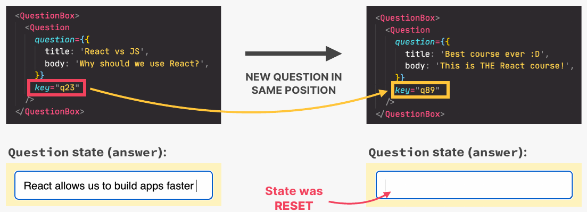
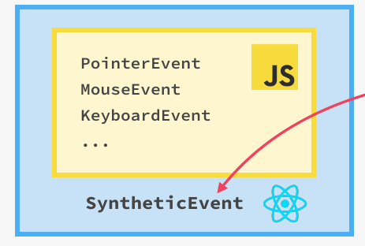

-
What is React:
EXTREMELY POPULAR,- DECLARATIVE,
- COMPONENT BASED,
- STATE DRIVEN JAVASCRIPT
LIBRARY FOR BUILDING USER INTERFACES,
CREATED BY FACEBOOK -
Complete Frameworks based on React:
- NEXT.js
- Remix
-
Options for SETTING UP A RECT PROJECT:
Start from Create-React-App as beginners, move to a more modern build tool - VITE, for real-world apps at the end -
Setting up a project with Create-React-App
npx create-react-app@5 project-name #Using create-react version 5
npx create-react-app@5 project-name #Using create-react version 5Component
- Strict mode
import React from "react";
import ReactDOM from "react-dom/client";
function App() {
return <h1>Hello React!</h1>;
}
const root = ReactDOM.createRoot(document.getElementById("root"));
root.render(
<React.StrictMode>
<App />
</React.StrictMode>
);import React from "react";
import ReactDOM from "react-dom/client";
function App() {
return <h1>Hello React!</h1>;
}
const root = ReactDOM.createRoot(document.getElementById("root"));
root.render(
<React.StrictMode>
<App />
</React.StrictMode>
);- Component Tree
JSX
- Declarative syntax to describe what components look like and how they work
- Components must return a block of JSX
- Extension of JavaScript that allows us to embed JavaScript, CSS and React components into HTML
- Babel convert each JSX to a JavaScript(React.creatElement() call)
- Possible to use React without JSX, but that makes code hard to implement and read.
Props
- Pass data(values, arrays, objects, funcitons...) from Parent component to Child component
- Props is data coming from the outside, and can only be updated by the parent component
- While State is internal data that can be updated by the component's logic
One-Way Data Flow
Never from Down to Top of the component tree
React Fragments
Make it possible to group elements without adding extra wrapping tag like <div></div>
//Baisc React fragment
<>
</>
//Or when need a key for the element
<React.Fragment key={}>
</React.Fragment>//Baisc React fragment
<>
</>
//Or when need a key for the element
<React.Fragment key={}>
</React.Fragment>Children prop
// In parent component:
function parent(){
return(
<ChildComponent> children</ChildComponent>
)
}
//In the child component
funcion ChildComponent(props){
const childrenData = props.children
}
// In parent component:
function parent(){
return(
<ChildComponent> children</ChildComponent>
)
}
//In the child component
funcion ChildComponent(props){
const childrenData = props.children
}
- The children prop allow us to pass JSX into an element (besides regular props)
- Essential tool to make reusable and configurable components (especially component content)
- Really useful for generic components that don’t know their content before being used (e.g. modal)
React State & Event
Event Handling
onClick={}
onMouseEnter={}onClick={}
onMouseEnter={}State
- Memory of a Component
- "state variable"/"piece of state": A single variable in a component state
- Updating component state trigger React to re-render the component
const [state,setStateFunction] = useState()
const [state,setStateFunction] = useState()- useState is one of the React hooks
- Hooks can be only called in the top level of a function
- State should be a constant variable and not to be set manually
Updating State based on Current State
- When setting a change of state, which depends on the current state, include it in the setState function
onClick={()=>setState(prevState=>!prevState)} //Alter the stateonClick={()=>setState(prevState=>!prevState)} //Alter the stateControlled Element
- Initialize a piece of state for an element want to control
const [state,setState] = useState() - invoke setState() function when input changes
onChange={(event)=>setState(event.targe.value)} - Keep the element value same to the value of state(e.g. clear the input after a submission)
value={state}
When to use State
Deriving State
- Derived state: state that is computed from an existing piece of state or from props
- Works because re-rendering component will automatically re-calculate derived state
Component Categories
- Stateless/Presentational Component
- Stateful Component
- Structural Component
Component Composition
- Combining different components using the {children} prop(or explicitly defined props)
- Make components reusable
- Solution to props drilling

How React works
COMPONENT VS. INSTANCE VS. ELEMENT
- A component is a function that returns React elements (element tree), which usually written as JSX
- Instances are created when we “use” components
- Actual “physical” manifestation of a component
- Has its own state and props
- Has a lifecycle (can “be born”, “live”, and “die”)
- JSX is converted to React.createElement() function calls
- A React element is the result of these function calls
- Information necessary to create DOM elements
HOW COMPONENTS ARE DISPLAYED ON THE SCREEN
- In React, rendering is NOT updating the DOM or displaying elements on the screen.
- Rendering only happens internally inside React, it does not produce visual changes.
- Rendering only happens internally inside React, it does not produce visual changes.
HOW RENDERS ARE TRIGGERED
- THE TWO SITUATIONS THAT TRIGGER RENDERS
- Initial render of the application
- State is updated in one or more component instances (re-render)
- The render process is triggered for the entire application
- In practice, it looks like React only re-renders the component where the state update happens, but that’s not how it works behind the scenes
- Renders are not triggered immediately, but scheduled for when the JS engine has some “free time”. There is also batching of multiple setState calls in event handlers
The Render Phase
Virtual DOM:
- Tree of all React elements created from all instances in the component tree
- Cheap and fast to create multiple trees
- Nothing to do with “shadow DOM”(a concept in Browser)
- Rendering a component will cause all of its child components to be rendered as well (no matter if props changed or not)
The RECONCILER of React - Fiber
- Why not update the entire DOM whenever state changes somewhere in the app?
- Writing to the DOM is (relatively) slow.
- Usually only a small part of the DOM needs to be updated
- So, React reuses as much of the existing DOM as possible, where Reconciliation takes part in.
- Reconciliation: Deciding which DOM elements actually need to be inserted, deleted, or updated, in order to reflect the latest state changes.
- Fiber is the Reconciler of React
- Fiber tree: internal tree that has a “fiber” for each component instance and DOM element
- Fibers are NOT re-created on every render
- Work can be done asynchronously
- Rendering process can be split into chunks, tasks can be prioritized, and work can be paused, reused, or thrown away
- Enables concurrent features like Suspense or transitions
- Long renders won’t block JS engine
HOW DIFFING WORKS
- Comparing elements step-by-step, based on their position in the tree
- Diffing uses 2 fundamental rules:
- Two elements of different types will produce different trees:
- Case1: SAME Position in the DOM, DIFFERENT Element
- React assumes entire sub-tree is no longer valid
- Old components are destroyed and removed from DOM, including state
- Tree might be rebuilt even if children stayed the same (state is reset)
- Case2: SAME Position, SAME Element
- Element will be kept (as well as child elements), including state
- New props / attributes are passed (if they changed between renders)
- Sometimes this is not what we want... Then we can use the key prop
- Case1: SAME Position in the DOM, DIFFERENT Element
- Elements with a stable key prop stay the same across renders
- Two elements of different types will produce different trees:
The Key prop
- Special prop that we use to tell the diffing algorithm that an element is unique
- Allows React to distinguish between multiple instances of the same component type
- When a key stays the same across renders, the element will be kept in the DOM, even if the position in the tree changes.(Diffing fundamental rules 2):
- Usage 1 of Key prop: Using keys for items in list
- When a key changes between renders, the element will be destroyed and a new one will be created (even if the position in the tree is the same as before)
- Usage 2 of Key prop: Using keys to reset State
Usage 1: Using keys in lists
Usage 2: Using keys to reset State of content at fixed position
- Without key, the State of a component instance and its DOM element won't update:
- With using key, the State and DOM element will get updated by updating the Key prop

THE COMMIT PHASE AND BROWSER PAINT
- React writes to the DOM insertions, deletions, and updates (list of DOM updates are “flushed” to the DOM)
- Committing is synchronous: DOM is updated in one go, it can’t be interrupted. This is necessary so that the DOM never shows partial results, ensuring a consistent UI (in sync with state at all times)
- After the commit phase completes, the workInProgress fiber tree becomes the current tree for the next render cycle
- The commit phase is performed by ReactDOM rather than React itself. There are other "renderers" for the commit phase, targeting different platforms besides the DOM/Webpage.
The overview of the React handeling process
THE TWO TYPES OF LOGIC IN REACT COMPONENTS
- RENDER LOGIC
- Code that lives at the top level of the component function
- Participates in describing how the component view looks like
- Executed every time the component renders
- EVENT HANDLER FUNCTIONS
- Executed as a consequence of the event that the handler is listening for (change event in this example)
- Code that actually does things: update state, perform an HTTP request, read an input field, navigate to another page, etc.
Side Effect vs Pure Function
-
Side effect: dependency on or modification of any data outside the function scope. “Interaction with the outside world”. Examples: mutating external variables, HTTP requests, writing to DOM.
- Side effects are not bad! A program can only be useful if it has some interaction with the outside world
-
Pure function: a function that has no side effects.
- Does not change any variables outside its scope
- Given the same input, a pure function always returns the same output
RULES FOR RENDER LOGIC
- Components must be pure when it comes to render logic: given the same props(input), a component instance should always return the same JSX (output)
- Render logic must produce no side effects: no interaction with the “outside
world” is allowed. So, in render logic:- Do NOT perform network requests API calls)
- Do NOT start timers
- This is why we can’t mutate props!
- Do NOT directly use the DOM API
- Do NOT mutate objects or variables outside of the function scope
- Do NOT update state (or refs): this will create an infinite loop!
- Side effects are allowed (and encouraged) in event handler functions!
There is also a special hook to register side effects (useEffect)
State update and batched
-
Updated State variables are not immediately available after setState call, but only after the re-render (This also applies when only one state variable is updated)
-
If we need to update state based on previous update, we use setState with callback
setState(currentState => newState) -
Multiple state updates inside an event handler function are batched, so they happen all at once, causing only one re-render.
-
Since React 18, Automatic Batching also happens in timeouts,promises, and native event handlers.
Events in React
HOW REACT HANDLES EVENTS
- EVENT DELEGATION
- Handling events for multiple elements centrally in one single parent element
- Better for performance and memory, as it needs only one handler function
SYNTHETIC EVENTS

- React use Synthetic Events, which Wrapper around the DOM’s native event object
- Has same interface as native event objects, like stopPropagation() and preventDefault()
- Fixes browser inconsistencies, so that events work in the exact same way in all browsers
- Most synthetic events bubble (including focus,blur, and change), except for scroll
- React Event Handlers different from in JS:
- Attributes for event handlers are named using camelCase (onClick instead of onclick or click)
- Default behavior can not be prevented by returning false (only by using
preventDefault()) - Attach “Capture” if you need to handle during capture phase (example: onClickCapture)
Libaries vs Frameworks
Debugging
- React Developer tools for browser console
Fragments, Portals & refs
Effect
Component (instance) Lifecycle
Side effects in React
- In React, a side effect is basically any “Interaction between a React component and the world outside the component”.
- We can also think of a side as “code that actually does something”.
- Examples: Data fetching, setting up subscriptions, setting up timers, manually accessing the DOM, store data in browser storage, Send HTTP requests to backend servers, etc.
- Other tasks besides rendering UI and react to user input
- Side Effect can be made in
- Event Handler vs useEffect
| Event Handlers | useEffect |
|---|---|
| Executed when the corresponding event happens | Executed after the component mounts (initial), and after subsequent re-renders |
| Used to react to an event | Used to keep a component synchronized with some external system (e.g., with data from an API) |
useEffect() Hook
- Runs when dependencies change
- When no dependencies defined, it runs everytime the component being rendered
The UseEffect Dependency Array
- By default, effects run after every render. We can prevent that by passing a dependency array
- Without the dependency array, React doesn’t know when to run the effect
- Each time one of the dependencies changes, the effect will be executed again
- Every state variable and prop used inside the effect MUST be included in the dependency array
- Otherwise, we get a “stale closure”.
- Usage:
useEffect(()=>{
console.log("This runs every time after the state updated(e.g. user input or component being rendered)")
})
useEffect(()=>{
console.log("This runs only at the first time the component rendered, e.g. refresh the webpage")
},[])
useEffect(()=>{
console.log("This runs every time when anyone of the dependencies reevaluated")
},[denpendency1,dependency2,dependency3...])useEffect(()=>{
console.log("This runs every time after the state updated(e.g. user input or component being rendered)")
})
useEffect(()=>{
console.log("This runs only at the first time the component rendered, e.g. refresh the webpage")
},[])
useEffect(()=>{
console.log("This runs every time when anyone of the dependencies reevaluated")
},[denpendency1,dependency2,dependency3...])SYNCHRONIZATION & LIFECYCLE of useEffect
- useEffect is like an event listener that is listening for one dependency to change. Whenever a dependency changes, it will execute the effect again
- Effects react to updates to state and props used inside the effect (the dependencies). So effects are “reactive” (like state updates re-rendering the UI)

useEffect Cleanup
-
Cleanup Function: Function that we can return from an effect
-
When and Why to use cleanup funciton:
- Runs on two different occasions:
- Before the effect 1 is executed again
- After a component has unmounted
- Runs on two different occasions:
-
Necessary whenever the side effect keeps happening after the component has been re-rendered or unmounted
-
Each effect should do only one thing! Use one useEffect hook for each side effect. This makes effects easier to clean up
-
Examples:
-
Usage:
useEffect(() => {
const identifier = setTimeout(() => {
console.log("Checking form validity");
setFormIsValid(
enteredEmail.includes("@") && enteredPassword.trim().length > 6
);
}, 500);
return () => {
console.log("CleanUp!");
clearTimeout(identifier); //Clear the timer every time before the identifier function runs
};
}, [enteredEmail, enteredPassword]); useEffect(() => {
const identifier = setTimeout(() => {
console.log("Checking form validity");
setFormIsValid(
enteredEmail.includes("@") && enteredPassword.trim().length > 6
);
}, 500);
return () => {
console.log("CleanUp!");
clearTimeout(identifier); //Clear the timer every time before the identifier function runs
};
}, [enteredEmail, enteredPassword]);Doesn't run for the very first time of the side effect function execution, but runs before every next time the callback function execution
useEffect(()=>{
console.log('Effect Running');
return()=>{
console.log('Effect CleanUp');// This cleanup function runs only when the component being removed, as there are no dependencies
}
},[])//No dependenciesuseEffect(()=>{
console.log('Effect Running');
return()=>{
console.log('Effect CleanUp');// This cleanup function runs only when the component being removed, as there are no dependencies
}
},[])//No dependencies- Closure in JavaScript
- A closure is a function having access to the parent scope, even after the parent function has closed.
- Abort Controller in Browser API to avoid multiple redundant fetch requests during user type in
useEffect(
function () {
const controller = new AbortController();
async function fetchSomeData() {
try {
const res = await fetch(URL, { signal: controller.signal });
} catch (error) {
console.error(error.message);
}
}
fetchSomeData();
return function () {
controller.abort(); //Cleaning up function of Aborting redundant fetch
};
},
[dependency]
);
useEffect(
function () {
const controller = new AbortController();
async function fetchSomeData() {
try {
const res = await fetch(URL, { signal: controller.signal });
} catch (error) {
console.error(error.message);
}
}
fetchSomeData();
return function () {
controller.abort(); //Cleaning up function of Aborting redundant fetch
};
},
[dependency]
);
REACT HOOKS AND THEIR RULES
REFS & useRef
- “Box” (object) with a mutable .current property that is persisted across renders(“normal” variables are always reset)
- Two big use cases:
- Creating a variable that stays the same between renders (e.g. previous state, setTimeout id, etc.)
- Selecting and storing DOM elements
- Refs are for data that is NOT rendered: usually only appear in event handlers or effects, not in JSX (otherwise use state)
- Do NOT read write or read .current in render logic (like state)
Ref vs State
Use Reducer
Styling component
Styling Options in React
CSS modules
Always use class name for CSS
- or the selector will select all the elements from the entire project
.ClassName :global to select all elements with the classname in the entire project
import styles from the CSS file
React Router
- With routing, we match different URLs to different UI views React components): routes
- This enables users to navigate between different applications screens, using the browser URL
- Keeps the UI in sync with the current browser URL
- Allows us to build Single-Page Applications
Single Page Applications (SPA)
- Application that is executed entirely on the client (browsers)
- Routes: different URLs correspond to different views (components)
- JavaScript React) is used to update the page DOM
- The page is never reloaded
- Feels like a native app
- Additional data might be loaded from a web API
Router
npm install react-router-dom
import {BrowserRouter, Routes, Route} from "react-router-dom";
</BrowserRouter>
</Routes>
<Route path="*" element={<Page/>} />
</Routes>
</BrowserRouter>import {BrowserRouter, Routes, Route} from "react-router-dom";
</BrowserRouter>
</Routes>
<Route path="*" element={<Page/>} />
</Routes>
</BrowserRouter>Index Route
Default
<Route index element={<Homepage />} />
Link and NavLink
<Link to='/pricing'></Link>
<NavLink to='/pricing'></Link> NavLink makes it active when it's on the page
Outlet
similar to {children}
Context API
- System to pass data throughout the app without manually passing props down the tree
- Allows us to “broadcast” global state to the entire app
- Provider: gives all child components access to value
- Value: data that we want to make available (usually state and functions)
- Consumers: all components that read the provided context value
Usage
import {useContext, createContext} from "react";
const PostContext = createContext(); //1. Create a new context
function PostProvider({ children }) {
return (
//2. Provide Value to Child Components
<PostContext.Provider
value={{
posts: searchedPosts,
onAddPost: handleAddPost,
onClearPosts: handleClearPosts,
searchQuery,
setSearchQuery,
}}
>
{children}
</PostContext.Provider>
);
}
//3. Consume the context
const {onAddPost} = useContext(PostContext);
import {useContext, createContext} from "react";
const PostContext = createContext(); //1. Create a new context
function PostProvider({ children }) {
return (
//2. Provide Value to Child Components
<PostContext.Provider
value={{
posts: searchedPosts,
onAddPost: handleAddPost,
onClearPosts: handleClearPosts,
searchQuery,
setSearchQuery,
}}
>
{children}
</PostContext.Provider>
);
}
//3. Consume the context
const {onAddPost} = useContext(PostContext);